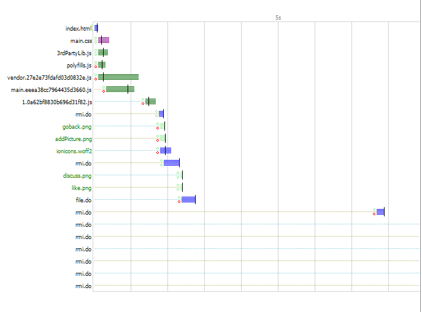

[TOC]
必要修改
COM、CM、TM
删除有话说模块
直接删掉整个文件夹，然后ionic serve修复一下语法报错
跳转有话说的方式
1 | let lc = window.location; |
openTagWithoutDataToken内部使用一事通的openUrl方法，可以携带cookie到目标页面，不管是否同域。这样就解决了权限认证的问题PATHS.WANTTOSAY是一个nginx的反向代理，代理到真正的有话说前端应用地址1
2
3
4
5location /lc07WantToSay/ {
proxy_pass http://lc07-want-to-say-lt.paas.cmbchina.cn/;
proxy_cookie_path / /lc07WantToSay/;
proxy_cookie_path loginpath / ;
}
这样在浏览器中也可以调试，不会受到权限的困扰，也不用在前端代码中把地址写死
index.html中的细节- 查询参数添加
v=XXX，可以防止在应用更新时的html缓存 - 其他必要的参数也通过查询参数传递，因为一事通的
openUrl不能往目标页面传递数据 - 若应用是懒加载的，有必要在
url最后添加#/urlSegment，urlSegment是你默认根页面配置的segment（参见IonicPage配置）。 若不加这些，会发现需要点两次安卓返回键才能返回。因为从index.html转到index.html#/urlSegment会添加一条历史记录。 若需要直接跳到其他懒加载页面，只需修改跳转的
urlSegment即可。例如1
2this.ystUtilsService.openTagWithoutDataToken(
`${ lc.protocol }//${ lc.host }/${ PATHS.WANTTOSAY }/index.html?v=${ now }#/wanttosaymine/${ this.userCode }` );
- 查询参数添加
有话说
去除无用代码
- 删掉其他无用的模块文件夹，以及
core、shared中一些无用的部分 - 如果项目的
node_modules是从cm/tm/com拷贝的，那么需要去掉@ionic中多余的构建代码 - 审查
index.html中加载的资源，去除所有无用的代码
必要代码改造
安卓返回键问题
在跳转到所有入口页面后，页面上默认是不会有返回键的，需要在模板中添加定制的组件crm-back-button
1 | <ion-header> |
此组件是一个按钮，点击它会关闭由openUrl打开的页面
一事通浮动图标刷新
点击浮动图标的刷新后，会直接刷新当前url，若对应的组件获取路由数据的方式不对，很有可能会直接导致应用崩溃。为此需要所有懒加载页面改变获取路由参数的方式，改为从url中获取。
- 懒加载页面中
1
2
3@IonicPage( {
segment: "wanttosaydetail/:data", // data就是页面所需的路由参数
} )
数据获取方式还是跟以前一样就行1
this.navParams.get( "data" )
- 跳转时传递数据的方式
1
2
3this.navCtrl.push( "WanttosayDetailComponent", {
data: JSON.stringify( { id, userId: this.userId } )
} );
性能优化
减少资源体积
尽量减少启动时所要加载的资源，可以做的有
- 减少无用ts代码
- 研究
index.html中链接的资源，把无用的代码都删掉
减少启动加载的链接数目
将多个
css文件合并成一个，可以参考我写的小工具mergeCss，只需在配置文件merge-css.config.js中填写需要合并的css文件，然后运行1
npm run mergeCss
就可以把他们压缩成一个文件.例如
1
2
3
4
5
6
7
8var mergeCssConfig = {
outputFilePath: './www/build/main.css',// 最终压缩成的单一css文件路径
fileList: [
// './www/startup/load-prepare.css', // 启动画面
'./www/build/main.css', // build生成的样式文件
"./www/startup/startup_v2.css", // 设置表情相关样式
]
};外链
js处理，对于在index.html中的外链js，可以分2种情况必须在
main.js之前加载解析完成。此时就要将他们合并成1个文件，可以参考我写的小工具uglify3rdPartyLib，只需在配置文件uglify-3rd-party-lib.config.js中填写需要合并的js文件，然后运行1
npm run uglify3rdPartyLib
就可以把他们压缩成一个文件.例如
1
2
3
4
5
6
7
8
9
10var uglify3rdPartyLibConfig = {
outputFilePath: './www', // 最终压缩成的单一js文件路径
outputFileName: '3rdPartyLib.js', // index.html需要使用此名称
fileList: [
'./www/startup/loading-prepare.js',
"./www/lib/js-emoji/emoji_v2.min.js",
"./www/startup/startup_v2.js",
'./www/lib/yst/MobileJS.min.js',
]
};可以在
main.js加载完成之后再加载。此时使用defer或者动态生成script DOMdefer和async区别
defer1
<script src='lib/hammer.min.js' defer></script>
动态
script DOM1
2
3
4
5let body = document.getElementsByTagName( "body" )[ 0 ];
let script = document.createElement( "script" );
script.type = "text/javascript";
script.src = "lib/d3.js/d3.v3.min.js";
body.appendChild( script );
合并后的效果
TODO:添加defer、async的图
升级ionic版本
- ionic 3.6.0 会自动帮助我们生成
vendor.js，在此之前都是需要我们手动配置webapck才能生成此文件。而且经过一些测试发现，前者生成的各个js的总体积要小很多。 - 3.6.0版本与之前版本另一个不同之处是会在项目本地安装
ionic，此前都是利用全局的ionic。此特性可以让我们在不同的应用使用不同版本的ionic
ionic 3.5.3时js文件大小
ionic 3.6.0时js文件大小
缓存及gzip
缓存图片、css、js、字体
缓存配置
1
2
3
4
5location ~* \.(jpg|jpeg|png|gif|css|js|woff|woff2)$ {
root D:\ws\lc07-want-to-say\www;
expires max;
add_header Cache-Control public;
}
若没有expires头部，仍然会由浏览器缓存，但在后续请求中，浏览器会检查缓存若发现资源已经过期，会先发送一个条件GET请求来判断资源是否改变。
有expires头部时，会在过期的时间内直接获取缓存中的资源，不发送后台请求。
- 完善gzip，目前图片和动态rmi.do这些请求都没有被gzip压缩。添加配置
1
gzip_types image/* application/json;
禁用ETag响应头
ETag的缺陷
- 如果应用在多个服务器上部署了，那么不同服务器对于相同的资源会产生不同的ETag。当浏览器缓存了A服务器的一个资源，然后向B服务器发起条件GET请求，那么ETag不会匹配，此时会返回200响应，而不是304。
- 如果发送条件GET时，一起发送了
If-None-Match和If-Modefied-Since，除非二者都匹配了，否则不会返回304。
配置nginx禁用ETag，在http块中配置
1
etag off;
解决空缓存
在用户第一次进入有话说前，本地是没有对应资源的缓存的，即空缓存。 那么第一次进入页面时就会从头开始请求所有资源：

只有第二次进入页面才会利用到缓存：
更新：最好使用资源预加载那篇文章介绍的方法。
可以在第一次进入有话说前就预先访问一次页面，提前缓存所有资源，这样就解决了空缓存：
1 | /** |
ios使用iframe预先缓存：
ios缓存后再进入有话说：
安卓使用iframe预先缓存：
安卓缓存后再进入有话说：